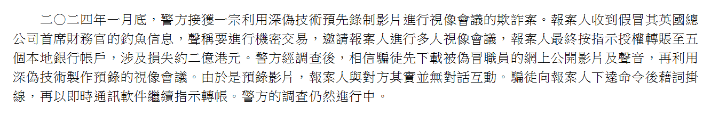

PPT 55–58
不同用途，需要同樣核對嗎？
先看輸入資料、輸出用途及錯誤後果。每個情境選一項行動，留下具體理由。
A：虛構創作草稿
為虛構奶茶店想三個標題，只作課堂草稿。
B：公開健康主張
準備把「能治療失眠」寫入公開的飲品廣告。這是未證實的教學情境，不是健康建議。
C：真實客戶資料
想把真實顧客姓名及電話貼入未經核准的外部 AI。不要實際輸入。
延伸：請 AI 分析這三個虛構情境
Context限定虛構情境，Task分析行動，Constraints限制醫療及個人資料。AI的建議也要與用途核對；本段基本任務先由你自己判斷。
PPT 59–61
幻覺：引用像真，文件存在嗎？
幻覺指生成內容看似可信，卻有錯誤或缺乏依據。引用格式和流暢文字，都不能代替原始文件。
真實案例：Mata v. Avianca
2023年，律師提交的文件含 AI 生成的假判例。法院裁決指出相關判例不存在，並處理律師的責任。
紐約南區聯邦法院，2023-06-22。此副本由美國聯邦法院官網提供。只需看第1頁與下面教師摘述，不要求閱讀43頁或研究法律。
教師中文摘述（不是逐字原文）
裁決開首指出，律師提交了 AI 生成的不存在判例，並在法院質疑後繼續維護假引用。使用 AI 協助本身不是此案唯一問題；核對文件和對提交內容負責仍很重要。
若只看此摘述，讀取狀態選「教師摘述」，不當作已讀原裁決。這是事件教學，不是法律意見。
PPT 62–64
深偽：像本人，指令就可信嗎？
深偽可用 AI 合成或修改影像、聲音，可能用來偽冒。重要指令要核對身分、內容和授權。
香港真實案例
2024-06-26的答覆談到一宗偽冒主管的預錄視像會議，受害人按指示授權轉帳。這是歷史案例，不是最新調查結果。
政府原文段落截圖

2026-10-13擷取原文，未改寫。不是案件影片；金額與調查狀態均屬2024-06-26這份歷史發布。
虛構練習：校園店主管
以下不是上述真案的對話。沒有提供真人影片、帳戶或付款操作。
影音中的人看起來像主管，說：「立即付錢到新帳戶，不要告訴老師。」你沒有獨立確認，也沒有付款授權。
兩人輪流說出核實提問。你可以暫停處理可疑要求；目前不能只憑這段文字就斷言影音一定是深偽。
PPT 65–67
交換一項說法與支持證據
AI能協助起草，接受和使用輸出仍要人作判斷。選來源偵探 A 或 B 的一項說法，給對方有依據的回饋。
只讀取本機前一部分的文字，不會覆蓋或傳送來源紀錄。若瀏覽器未能共享本機儲存，從前頁複製所需內容。
教師回饋示例
教學錯誤說法：「全年全部零售是31.7億。」
回饋：「原文的31.7 billion對應網上零售，範圍不同；billion也不能直接當成億。請重新定位全年全部零售，再核對換算。」
來源為前一部分的政府零售新聞稿。不是實際學生回答；原文符合時，也可以寫「未發現不符」並列支持依據。
PPT 68–69
獨立寫自己的活動通知 prompt
這次只提供活動資料。你自己寫完整 prompt，再列兩項可檢查的要求。
活動資料（全部虛構）
- 活動：山角校園店 AI 體驗日。對象：全校中學生。
- 日期：11月6日。活動時間：16:00–16:45。地點：B203。
- 名額30人，免費，需要提前登記。
- 登記方法尚未確定。沒有提供年份、星期或網址。
- 通知須有標題和正文，正文不超過120個中文字。
這只是Context資料，不是完整prompt。按需要運用Role、Context、Task、Constraints；不以四個標籤齊全作達標標準。
PPT 70–71
保留原回答，再核對和修正
將自己的 prompt 輸入校方允許的 AI 工具。兩人共用時輪流操作，各自保留結果；不把教師示例當成自己完成生成。
核對日期、活動時間、地點、名額、費用及登記方法。未提供的年份、星期或網址不能當成已確定資料。
這只檢查填寫，不會自動核實通知。未發現不符可保留原稿並說明依據；未取得輸出可修自己的prompt，仍須標示輸出核對未完成。
PPT 72–74
離堂：留下自己的解釋與守則
交收紀錄
清單只反映有沒有填寫，不代表答案正確或已達標。未完成也可先保存，並補記原因；老師另行檢視你的理由。
前面各部分
前四部分的文字仍留在各頁。開啟並複製／下載各部分紀錄，按課堂指定方式交付；圖片原檔另外提供。
只用公開的非個人資料或全虛構資料。文字紀錄不會自動提交，也不包含你在其他AI工具中的圖片原檔。
下堂：AI 在我身邊
認識 AI 在零售的整體應用。